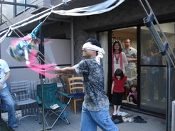
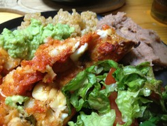

Cara and Kosuke will host a Cinco De Mayo Party at their home in Ayase! Sunday, May 5th , from 3p.m until you get tired! The more the merrier, so bring your family and friends, too!
キャラと耕介が綾瀬の家でシンコデマーヨパーティーを開きます。日時は５月５日（日）、午後３時から疲れるまで！人数が多ければ多いほど、楽しくなるので、ご家族やお友達と一緒に来てください！

Participation is free, but please bring drinks to share (alcoholic AND/OR non-alcoholic). Cara will serve Tex-Mex food and you are also welcome to bring food/snacks to share. And bring your batting arm because we will have a piñata! 参加費は無料ですが、皆で飲むお酒やソフトドリンク等を持って来て下さい。キャラは色々なテキサス風のメキシコ料理 を用意します。でも、皆で食べるための料理やおやつも持って来てくれるとありがたいです。また、ピニャータ（キャンディが入っている飾り）をバットで叩き割るので、野球が上手な人は是非！

If you would like to join, please RSVP: carasensei@gmail.com (Cara). She will send a map of her home if you haven’t been there before.
参加したい方は (キャラ)に連絡してください。 私の家に来た事がない方には地図と行き方を送ります。
Moreover, if you are also interested in making the Tex-Mex, Cara will be teaching an English Cooking lesson at her home that same day, from 11:00a.m .until 2~3p.m. Please see: Cinco De May Cooking Lesson for more information. Please let Cara know if you’d like to join the cooking lesson.
また、テキサス風のメキシコ料理 を作りたい方をキャラが教える英語でクッキングレッスンに 招待します。同日の午前１１時から午後２〜３時までキャラの家でレッスンをします。詳しくは、Cinco De May Cooking Lesson を見て、参加希望者はキャラにお知らせください。
Thank you! - Cara and Kosuke (Koss)